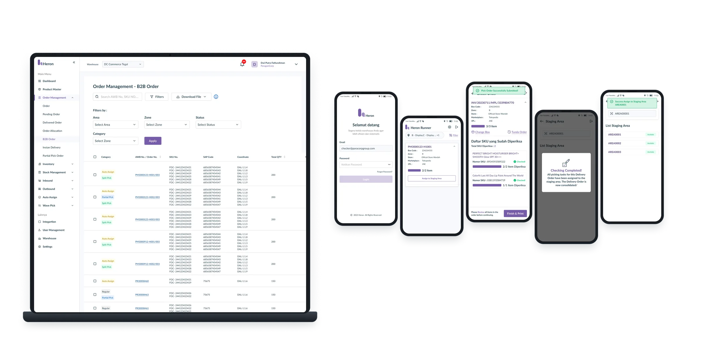
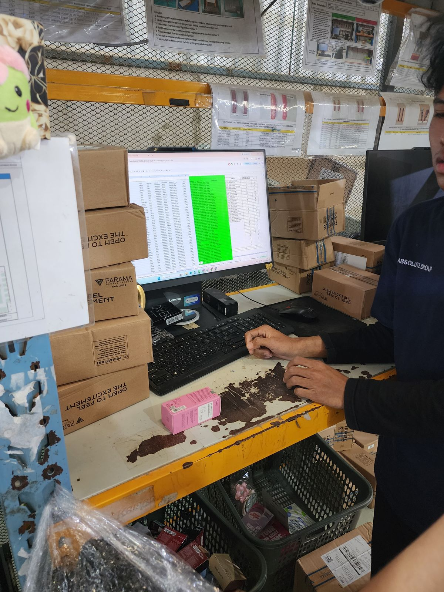
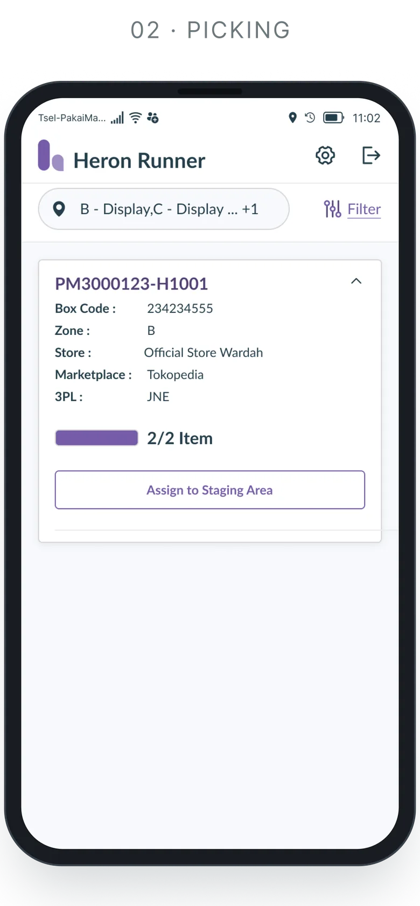

WMS System
Warehouse Management System enterprise internal yang dirancang untuk merapikan operasional logistik inti — dari alokasi pesanan, B2B split picking dan staging sampai dispatch akhir — dan mendukung skenario fulfillment yang kompleks di jaringan distribusi berskala besar.

[Gambar cover]Satu alur yang terhubung untuk seluruh lantai gudang — dari alokasi sampai dispatch.
Integrasi end-to-end
Berhasil menyatukan proses gudang yang terpecah ke dalam satu design system operasional.
Fleksibilitas fulfillment B2B
Operator bisa menjalankan skenario kompleks dengan mulus — termasuk B2B Split Picking, Partial Pick dan Partial Fulfillment — tanpa memutus keterlacakan operasional.
Skalabilitas operasional
Arsitektur antarmuka yang terstruktur dan modular, siap menampung logika bisnis yang terus berkembang dan ekspansi gudang.
50+ layar didesain untuk admin, picker, checker dan dispatcher.
Masalahnya
Operasional gudang enterprise melibatkan banyak proses yang saling terhubung, dari alokasi pesanan dan penugasan picker sampai pengelolaan picking, staging, fulfillment dan dispatch.
Seiring operasional makin kompleks, tim gudang kesulitan menangani pesanan B2B besar yang harus dipecah ke berbagai zona stok, picker atau rentang waktu. Mereka butuh satu sistem terpadu yang bisa menangani B2B split picking yang fleksibel, partial fulfillment dan alur kerja operasional real time, sambil tetap menjaga efisiensi harian yang tinggi di lantai gudang.
Untuk siapa
Admin gudang
Mengelola konfigurasi operasional, alokasi pesanan, aturan fulfillment B2B dan pengecualian sistem.
Operator gudang
Menjalankan aktivitas lapangan harian, termasuk B2B split picking, replenishment, staging dan persiapan pesanan.
Supervisor gudang
Memantau progres operasional, pembagian beban kerja picker, edge case dan eksekusi gudang secara keseluruhan.
Yang saya desain
B2B order split picking & alokasi
Alur kerja intuitif yang memungkinkan admin dan logika sistem memecah pesanan B2B yang rumit menjadi tugas picking yang mudah dikelola, berdasarkan lokasi barang, ketersediaan picker atau batasan stok.
Fulfillment yang fleksibel
Alur modular yang mendukung Split Picking, Partial Pick, Partial Fulfillment dan pengecualian operasional.
Operasional gudang end-to-end
Antarmuka yang fokus pada tugas untuk Replenishment, Staging Area, Dispatcher, Proxy Store dan mekanisme Auto-Assign.
Integrasi sistem & penanganan error
UI operasional yang mendukung alur outbound SAP, mekanisme retry dan kondisi kegagalan sistem.
Cara saya mengerjakannya
01 — Temukan masalah sebenarnya
Bekerja erat dengan operator gudang, supervisor dan product manager untuk memetakan alur lapangan yang sebenarnya, edge case pemecahan pesanan B2B, batasan teknis, dan bottleneck di lantai gudang.
02 — Dari draf ke prototype
Menerjemahkan logika operasional yang rumit menjadi user flow, wireframe dan prototype interaktif yang jelas.
03 — Validasi usability kualitatif
Melakukan usability testing kualitatif lewat Maze pada skenario operasional utama (termasuk Child Order Dispatching & Cancel Process Dispatch) untuk memvalidasi kejelasan alur dan kemudahan tugas sebelum diserahkan ke developer.
04 — Iterasi & serah terima
Menyempurnakan desain berdasarkan feedback user dan kelayakan teknis, mendokumentasikan state dan skenario edge case, serta bekerja erat dengan developer sepanjang build dan QA.
Di lantai gudang
Riset lapangan di lantai gudang: mengamati packer, checker dan dispatcher bekerja sebelum mendesain untuk mereka.




- 01 / 04Area packing, Gudang 3Tempat pesanan B2B dikemas lalu diserahkan ke dispatch.
- 02 / 04Jalur packingSetiap stasiun berjalan dengan HP, scanner dan kamera.
- 03 / 04Meja inboundSebelumnya: pengecekan SKU masih di spreadsheet.
- 04 / 04Stasiun packerPesanan datang ribuan — setiap tap harus berarti.
B2B split picking
Gambaran sederhana proses B2B split picking yang menjadi dasar layar-layarnya: satu parent order dipecah menjadi child order, di-pick paralel, dikonsolidasikan di staging lalu dikirim sebagai satu.
- 01 · Sistem
Order masuk
Parent order masuk dari SAP.
- 02 · Admin
Alokasi
Stok dicek per zona dan lokasi inventori.
- 03 · Sistem
Split picking
Parent dipecah menjadi child order berdasarkan zona, picker atau stok.
Child A · zona AChild B · zona BChild C · sebagian - 04 · Picker
Pick paralel
Setiap child order otomatis ditugaskan ke picker-nya sendiri.
- 05 · Checker · Packer
Cek & kemas
Setiap SKU dipindai dan diverifikasi per child order.
- 06 · Dispatcher
Staging area
Child menunggu saudaranya untuk dikonsolidasikan.
- 07 · Dispatcher
Dispatch
Lengkap: satu delivery order untuk parent-nya. Belum lengkap: partial fulfillment mengirim child yang sudah siap, sisanya tetap pending.
- 08 · Sistem
Sinkron outbound
Status dikirim kembali ke SAP, dengan retry jika gagal.
Tampilan layar
Kumpulan alur kerja utama di sistem operasional, termasuk Order Allocation, B2B Split Picking, Picker Management, Partial Fulfillment, Replenishment, Staging dan Dispatch.
Layar-layarnya menunjukkan bagaimana aturan gudang yang rumit dan edge case operasional diterjemahkan menjadi antarmuka yang jelas dan fokus pada tugas untuk operasional harian bervolume tinggi. Dari 50+ layar yang didesain, hanya sebagian yang ditampilkan di sini.


